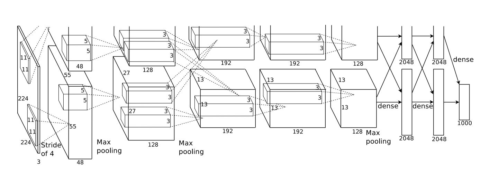
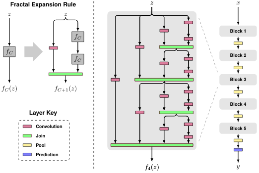

Deep Learning Archtectures

[AlexNet] ImageNet Classification with Deep Convolutional Neural Networks
NIPS-Proc
slides
code
video
[NIN] Network In Network
arxiv
gitxiv
code
[SENet] Squeeze and Excitation Networks
arxiv
code1
code2

[FractalNet] FractalNet: Ultra-Deep Neural Networks without Residuals
project